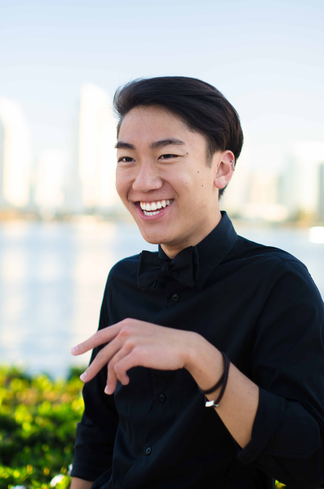

about me!

hello. my name is Lee. i am currently a second year
student at UC San Diego majoring in ICAM
(Interdisciplinary Computing and the Arts Major) with a
focus in Music and Visual Arts. i am also
pursuing two minors in Computer Science and
Interaction Design. i am a musician, designer,
photographer, and developer. i enjoy learning new
computer languages (like html, css, and js to make this
website) and sharpening my skills as an artist and
engineer. feel free to look at my work in the links
above, view my
Resume,
or contact me and find my social media in the
"contact" page above.
p.s. i swear i know how to capitalize my sentences. it's just for the aesthetic. also, this website is still a wip, so i'll be updating/tweaking it as i go. thanks for understanding! ^_^
p.s. i swear i know how to capitalize my sentences. it's just for the aesthetic. also, this website is still a wip, so i'll be updating/tweaking it as i go. thanks for understanding! ^_^